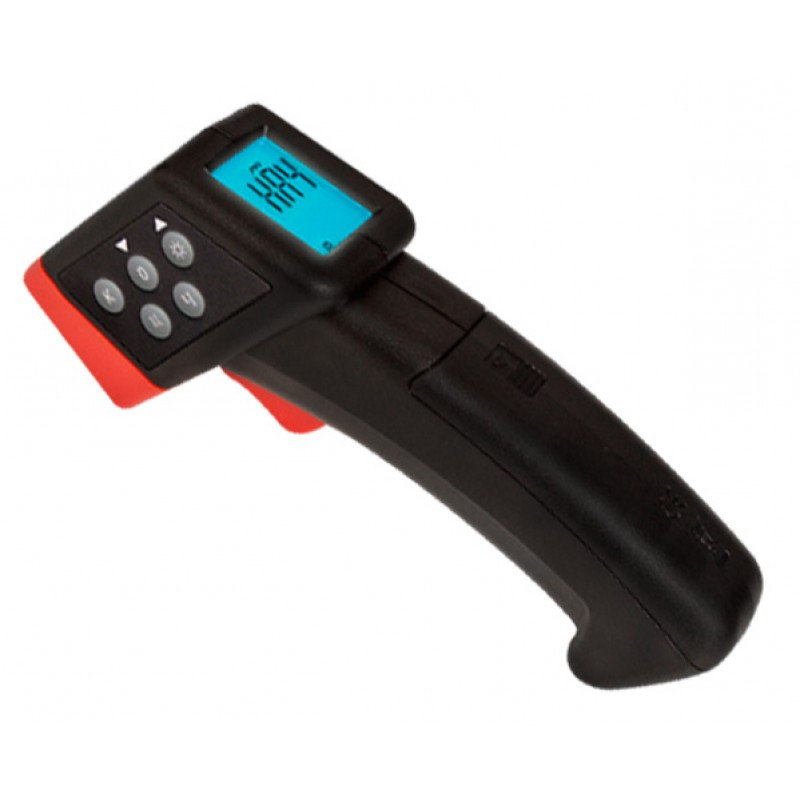
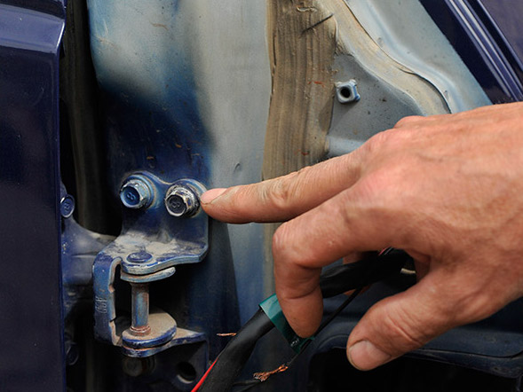

При купівлі нової автівки, вибір найчастіше зупиняється на авто, котрі вже буди у використранні, особливо, якщо ця
автівка у вас перша. З кожним наступним власником авто виникають нові нюанси, котрі потрібно вразовувати під час
купівлі:
Рівень пошкодженості
Чи була втоплена
Чи була бита
Кілометраж
Законність
Пошкодженість
Майже усі машини, котрі знаходилися у користуванні потрапляли у ДТП.
Були то звичайні подряпини, або повномаштабне зіткнення, що призвело до повної заміни деяких частин автівки може
вплинути на її працездатність та зовнішній вигляд з часом. Тому потрібно ретельно перевіряти авто під час огляду.
Наші поради:
Придбайте, або орендуйте товщиномер перед оглядом авто.
Зверніться до експерта
Звертайте увагу на фарбу та її відтінки на гайках, це може показати, чи рідна деталь, чи ні.
Рік випуску деталей має бути однаковим
Звертайте увагу на рекцію власника під час відповіді на питання про биття.


Ризики ламаної машини
В ідеалі не купляти ламану машину, але ви можете значно заощадити на купівлі такої машини, а отже цим фактором часто
незтують. Але це може призвести до наступних проблем:
Поява тріщин на вікнах, через викривлену геометрію деталей навколо них
Неоднаковий знос на шинах з різних боків
Витік повітря з салону або в салон
До кого звертатися по допомогу?
Експертна оцінка авто хоч і може коштувати як сам авто, але в більшості випадків, особливо при перших досвідах
купівлі в невідомих людей вона того варта, і збереже вам не лише гроші, а й нерви та вбереже вас від потенційних
небезпечних ситуацій на дорозі.
Підводячи підсумки можна сказати, що не варто витрачати більше потрібного, але і скупитися також не можна, бо це
може призвести до несподіваних наслідків.
Отже перевіряйте двічі, робіть попередні дослідження по темі та не цурайтеся звернутися по допомогу. Та водіть
безпечно і не пийте за кермомо нової машини.
Гуд бай ;)